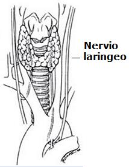

Gonzalo Pontón es el consejero delegado de CRÍTICA. El presente artículo fue publicado por primera vez en el diario español El País
Durante los próximos meses asistiremos a la publicación de varias ediciones conmemorativas de los 150 años de El origen de las especies, que se dio a las prensas cuando su autor, Charles Darwin, iba a cumplir 50. Es justo que sea así. De la carismática trinidad progre (Darwin, Marx, Freud), ninguno ha podido derrotar al tiempo como el primero.
Aunque quedan algunos detalles por ajustar que no afectan a su esencia, la teoría de la evolución ha sido verificada hasta la saciedad desde el registro fósil a la genómica comparativa, y hoy es un hecho científico tan indiscutible como la existencia de los átomos o la de los agujeros negros. Indiscutible, pero no indiscutido. Las Iglesias cristianas, judías y musulmanas no pueden aceptar la teoría de la evolución porque, según sus libros santos, un dios primordial omnipotente y omnisciente lo creó todo en seis días (o en seis mil millones de años, que en lo de la cronología los clérigos más espabilados se apuntan a la metáfora).
Acuciados por los descubrimientos científicos que han ido desmontando, pieza a pieza, la narración del Génesis y todos los mitos de creación existentes, ciertos fundamentalistas religiosos han propuesto, como explicación “científica” alternativa a la evolución, la existencia de un diseñador inteligente, en un remake de la vieja narración bíblica, pero sustituyendo al Anciano de los Días por, digamos, un Enric Satué o un Alberto Corazón todopoderosos.
La teoría de Darwin se asienta en cuatro pilares fundamentales: la evolución, el gradualismo (con las matizaciones de Stephen Jay Gould y Niles Eldredge), la especiación y la selección natural.
A estos cuatro pilares, el profesor Jerry A. Coyne, que acaba de publicar un libro titulado Why Evolution is True, añade un quinto que me parece irrefutable: “La imperfección es la marca de la evolución, no la del diseño consciente”. En efecto, la evolución produce criaturas imperfectas, inacabadas. Los mecanismos evolutivos han dotado al kiwi de unas alas sin función; la mayoría de las ballenas conservan vestigios de pelvis y huesos de las patas como recuerdo de su pasado de cuadrúpedos terrestres; los humanos contamos con músculos para accionar una cola ya desaparecida, erizar pelaje del que no disponemos (la “carne de gallina”) o mover cómicamente las orejas.

Por no hablar del famoso apéndice, muy útil para que nuestros abuelos primates pudieran hacer fermentar las hojas de los árboles y transformar su celulosa en azúcares. ¿Qué función desempeña en los humanos aparte de ponerles, a veces, en riesgo de muerte? Tal vez el diseñador inteligente haya sido un cirujano avispado.

¿Sabían ustedes lo del nervio laríngeo de los mamíferos? Yo tampoco, pero el profesor Coyne lo explica de maravilla: el tal nervio interviene en la fonación, pero en vez de ir directamente del cerebro a la laringe, desciende hasta el pecho, gira alrededor de la aorta y regresa a la laringe en un recorrido tres veces mayor del necesario. Fascinante. Pues ese nervio hace lo mismo en las jirafas, bajando y subiendo por su cuello como un taxista sin GPS. Ninguna deidad que se precie sería tan despistada. Lo que sucede es que el nervio laríngeo procede de los arcos branquiales de nuestros antepasados, los peces, y allí sí cumplían una función.
El aparato reproductor de los humanos es una galería de chapuzas y un campo minado.
¿Por qué los testículos no se forman directamente fuera del cuerpo, donde la temperatura es adecuada para los espermatozoides? Se forman en el abdomen, y cuando el feto tiene unos siete meses emigran al escroto a través de los canales inguinales, debilitando las paredes abdominales con el riesgo de causar hernias, a veces mortales. La uretra está muy mal diseñada, porque pasa por medio de la próstata, y cuando ésta se inflama dificulta o impide la micción.
Las mujeres paren a través de la pelvis en un proceso doloroso e ineficaz, porque es demasiado estrecha (por necesidades de la locomoción bipedal) para un cráneo que ha debido ensancharse para acoger el crecimiento del cerebro. Desde luego, el diseñador inteligente no era una mujer. Y ya que estamos hablando de los bajos, si usted fuera diseñador, ¿habría colocado una planta procesadora de residuos junto a un parque de atracciones?

Pero además, Darwin ya previó algo extraño en la selección natural, y es que no siempre actúa en bien de la especie. A veces la evolución puede producir resultados útiles para un individuo, pero perjudiciales para la especie en su conjunto. He aquí un ejemplo fastuoso aportado por el genio de Forges (EL PAÍS, 22 de febrero): en el dibujo aparece un obispo o cardenal (¿Rouco? ¿Camino?) de gesto avinagrado que Darwin observa entre perplejo y azorado. ¿Por qué razón?
Porque ve, como Forges y como yo, que aquí la selección natural no ha jugado en favor de la especie.
Si la selección natural “apaga” los genes más perjudiciales y activa los más favorables, ¿por qué existen los eclesiásticos? Si a través de la evolución y de la cultura, el animal humano ha mejorado la calidad de su vida, ha ampliado el alcance de su inteligencia y ha conseguido dotarse de una consciencia ética que le impulsa a amar a sus semejantes, a respetar sus vidas y sus libertades, y que le reprocha íntimamente, insoportablemente, sus miserias y su capacidad para el mal, ¿cómo es que no se ha desembarazado de los clérigos?
¿Qué función evolutiva tienen esos oscuros intérpretes de unos dioses atávicos que envían a niños-bomba a matar y ser muertos?
¿Por qué sobreviven seres inmorales capaces de engañar a sabiendas a los más débiles y desvalidos de los humanos diciéndoles que los preservativos pueden aumentar el riesgo de contraer el sida?
Sólo desde Darwin puede explicarse la existencia de tales criaturas: deben de ser vestigios de nuestros antepasados los reptiles.
Volver a la sección Ciencias de los orígenes
Comentarios
Comments powered by Disqus